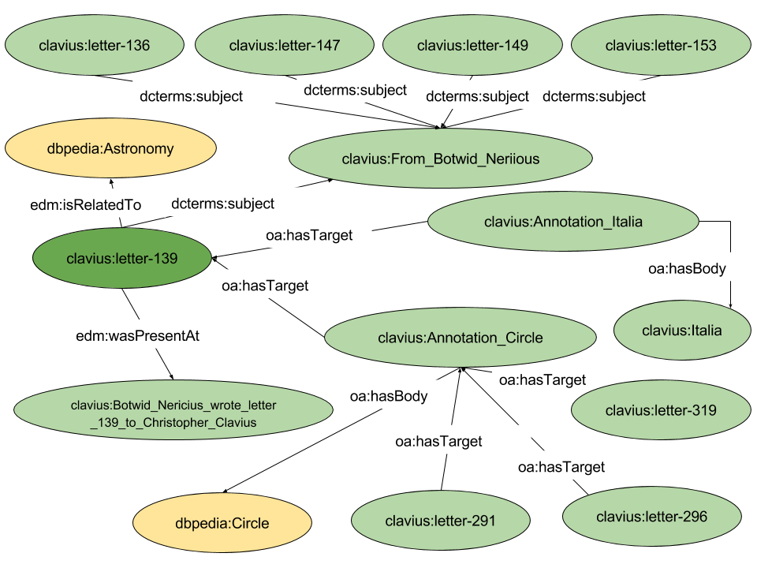

Resources
From manuscripts owned by APUG, the following resources have been extracted:
- letters: all handwritten letters;
- agents (person): all the authors of letters;
- places: all the places where the letters were written;
- events: all events related to the lives of the characters and the process of creating letters
- annotations: all the annotations cited in the letters;
- concepts: other concepts.
Internal Links
Each letter contains the following internal links (links among resources within the CoW-LD dataset):
- Annotation (cited Persons, Places, Geometries)
- Event
- Person (author/recipient)
- Place (where the letter is)
- Concept (expressed through the property edm:isRelatedTo or dcterms:subject)
The following figure shows an example of Letter (resource letter-139).

External Links
CoW-LD contains external links to the following sources: